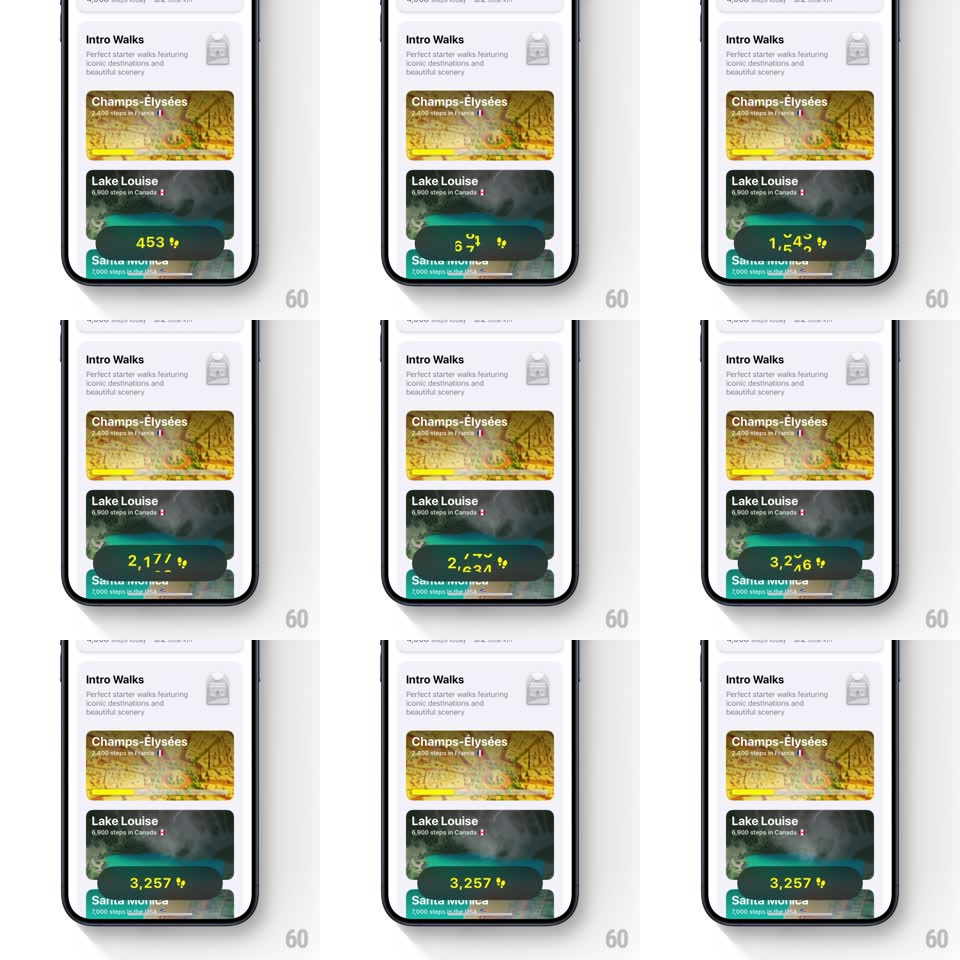

Media
Frame-by-frame

Rebuild this animation 1:1: Walk the World's step badge count-up - a dark pill with a bolt floats over the Lake Louise card, its digits bouncing as the value climbs rapidly from a low number and settles on 3,257.

Rebuild this animation 1:1: Walk the World's step badge count-up - a dark pill with a bolt floats over the Lake Louise card, its digits bouncing as the value climbs rapidly from a low number and settles on 3,257. ## Integration Integration: stack-agnostic spec - springs given as stiffness/damping, timed motions as duration + curve; map every value to your framework and animation library of choice. ## Scene Intro Walks list: header with subline, walk cards (Champs-Elysees, Lake Louise, Santa Monica) with artwork and step distances. A dark rounded pill with yellow digits and a bolt icon floats over the Lake Louise card's lower edge, casting a soft shadow. ## Motion spec Pattern: bouncing odometer count-up, ~1.4s. - Entrance: the pill pops in (scale 0 -> 1, spring ~400/16) over the card. - Count: the number races upward with an ease-out curve (fast to slow, ~1s total); each digit bounces vertically as it changes (6px overshoot, 100ms), thousands separator fading in when the value crosses 1,000. - Settle: on the final value (3,257) the pill does one celebratory bounce (scale 1 -> 1.1 -> 1, spring ~380/16) and the bolt icon flashes (opacity 1 -> 0.4 -> 1, 200ms). - Hold: the pill stays pinned over the card, following it if the list scrolls. ## Calibration - Count speed eases out - the last 200 steps take as long as the first 2,000. - Digits are monospace-width so the pill does not resize mid-count. ## Reduced motion The value crossfades to 3,257 (300ms) with a single gentle fade-in of the pill. ## Don't miss - The per-digit bounce, not a plain number swap, is the signature. - The bolt flashes exactly once, on landing - not during the count.